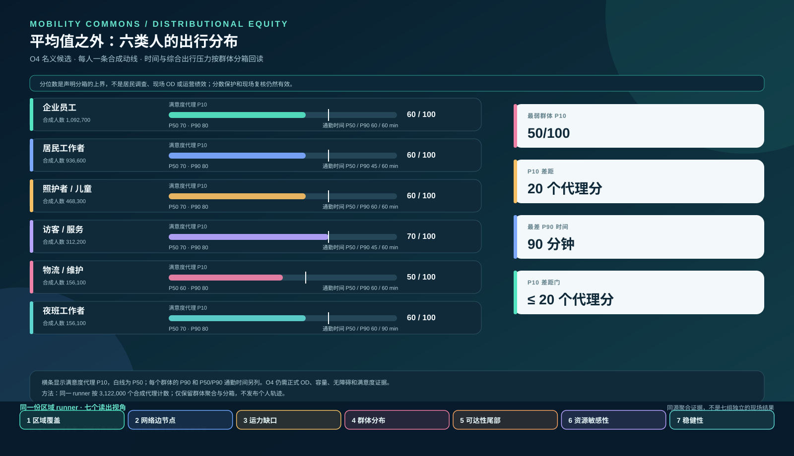
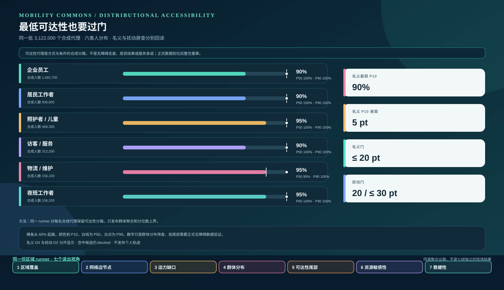
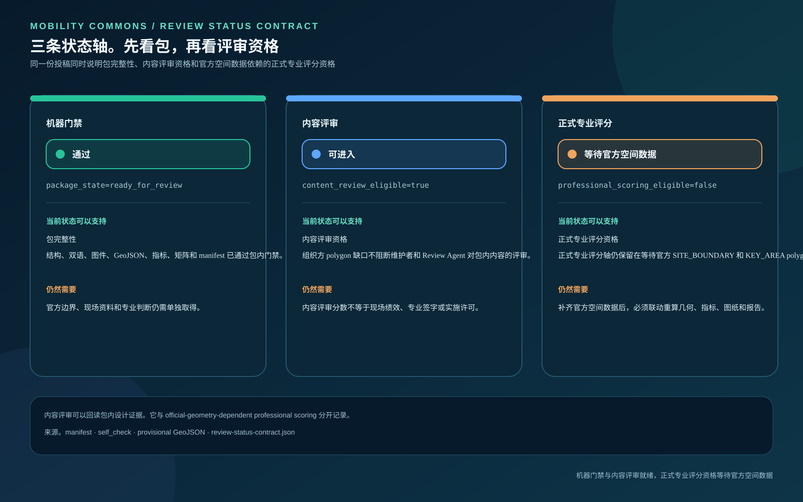
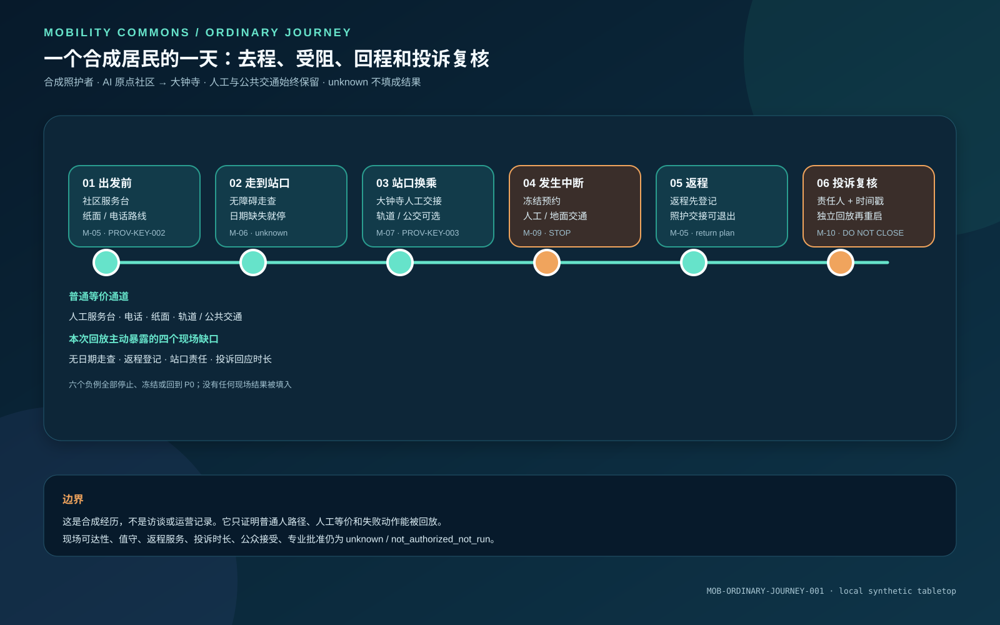

群体分布与可达性尾部
合成屏查同一份区域 runner 按六类群体回读个体合成时间、满意度与可达性代理。O4 下物流/维护组的满意度代理 P10 为 50/100，夜班工作者的通勤时间 P90 分箱为 90 分钟，群体 P10 差距为 20 个代理分；可达性代理 P10 差距为 5 个代理点。名义可达性门槛为 20 个代理点，压力门为 30 个代理点。P10 把分布尾部留在平均值旁边；这些是合成屏查读数，不是居民体验、居民无障碍走查、服务审计或运营绩效。


可达性尾部与最低群体门槛
合成屏查同一份 runner 按六类合成群体回读可达性代理 P10、P50 和 P90。O4 的可达性代理 P10 差距为 5 个代理点，名义使用 20 个代理点门槛；强天气压力下 O2 为 20 个代理点，压力门为 30 个代理点。这是合成充分性屏查，不是居民无障碍走查、服务可达性审计或运营承诺。
三条状态轴。包完整性、内容评审与正式专业资格
状态契约这张图把 package_state、内容评审资格和官方空间数据依赖的正式专业评分资格分开。`content_review_eligible=true` 表示组织方 polygon 缺口不阻断内容评审；`professional_scoring_eligible=false` 表示官方 SITE_BOUNDARY 和 KEY_AREA polygon 仍是正式专业评分轴的前置资料。维护者可以在内容评审轴上回读 Review Agent intake 分数，这项分数与官方空间数据依赖的专业评分分开记录。

一个合成居民的完整经历。去程、受阻、返程和投诉复核
合成回放周岚是一个合成照护者。她从 AI 原点社区服务台取得纸面、电话或人工路线，经连续无障碍段到大钟寺完成换乘；断网、雨雪或路缘冲突发生时，预约冻结，服务回到人工和地面公共交通。返程和投诉复核也必须在出发前留下入口。

校准债务与参数溯源
输入边界234 条方式参数、服务单元、方式权重和合成人口字段逐项登记。它们全部是 agent_proposed 或 design_target，observed_count=0，field_status=not_authorized_not_run。图板展示声明输入、方法参考和待补齐的现场校准，不把合成数值写成现场结果。

企业与居民公共决策凭证
公众输入边界八个问题入口把公开问题、合成筛查、授权输入、责任人、回复凭证、申诉、暂停和回退放进一条链。现场和同意状态仍为 not_authorized_not_run，图板不代表居民支持、公众共识或运营许可。